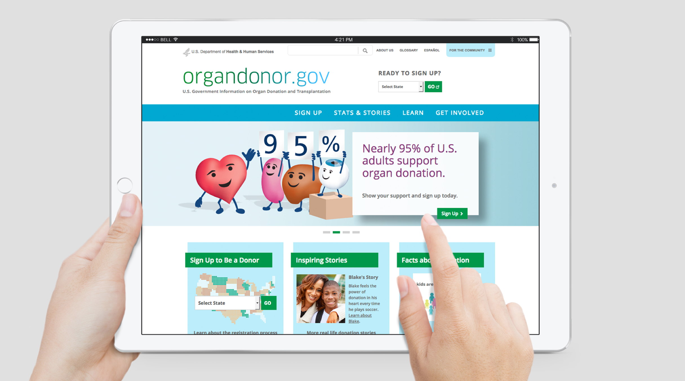
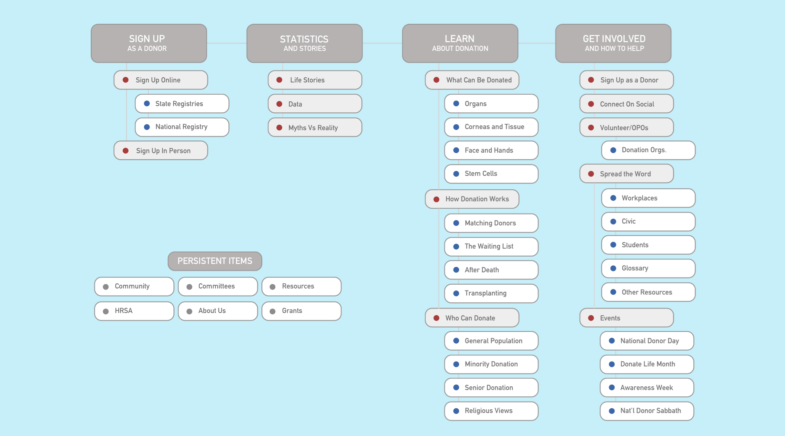
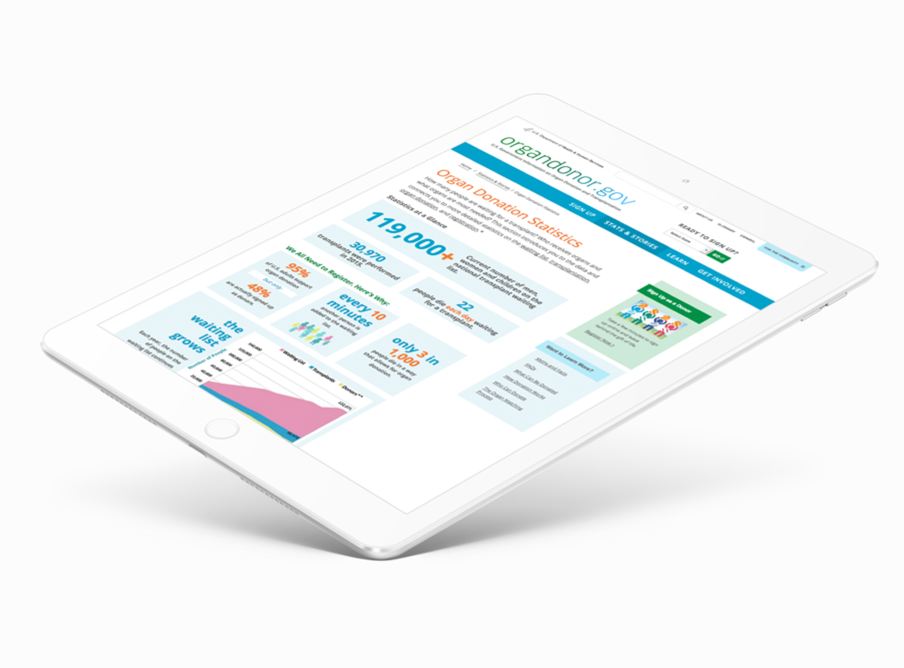
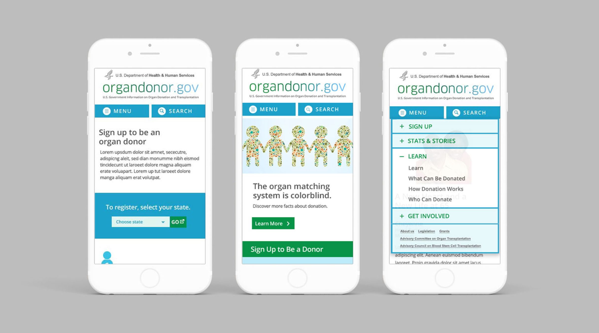
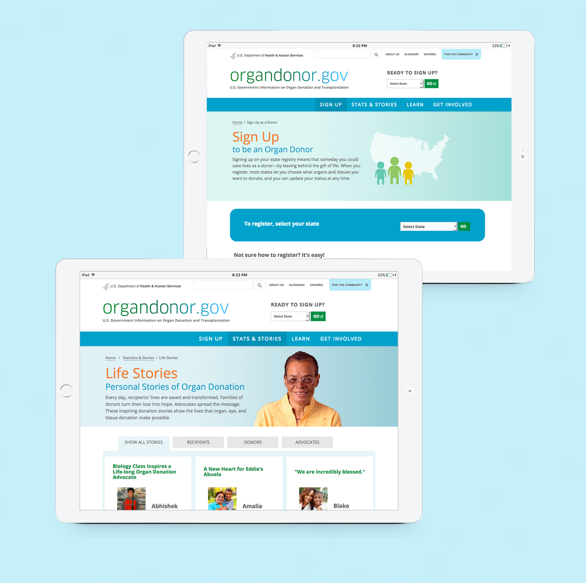

Home page

Site map

Statistics page was
designed dynamically for easy updates and high search value
Architecture
The new site uses
storytelling interwoven with facts and
editorial content for maximum impact
User Flow
Every page has tailored
onward journeys for key conversions like
"become a donor" or get involved as a
volunteer or an advocate
Conversions
It's easy for
any user to become a donor from any point on the
site, despite different state registries and
state-specific donation laws

Fully responsive

Donor registration landing page, and content including donor, recipient and advocate stories
US Department of Health and Human Services
Organdonor.gov
Organdonor.gov
is the US Department of Health and Human Services's organ donation website.
This project was to restructure and redesign the ten-year old site,
consolidating and remapping organically-grown content and
structure, creating a fully responsive and accessible experience,
and bringing focus to key actions and content.
Objective
Consolidate content, increase awareness
and donor registration
Outcome
While the site redesign can't take credit every registration,
the year after it was released there were 4 million registrations,
with 4,000 new registrations each day.
I'd designed this site before I knew what UX was. Unbeknownst to me,
I used UX methods like competitive analysis, wireframing,
interaction design and stakeholder interviews. I'd also created a carousel
framework, so a traditional illustrator could easily compose and
update multi-layered images without any coding or framework knowledge.
I'd also collaborated with a senior writer in the wireframe stage,
so we could smartly consolidate the sections and text. I'd say it
was one of my most challenging, but effective collaborations.
Live Links
Read more ►
Goals
Awareness, Engagement
Research Methodologies
- Competitive Analysis (non-profits and other related government sites)
- Stakeholder Interviews
Comparable Products
Donate Life America, National Kidney Foundation,
American Heart Association
Deliverables
Responsive Wireframes, High-Fidelity Designs to 3 breakpoints,
Content Templates, Site Style Guide, Accessibility Requirements/Tags,
Front-End Prototype, Type Treatment, Iconography, Illustrations
Team
Experience Director, Strategist, UX/UI/Visual Designer (myself),
Copywriter, Junior Designer, Front-End Developer, Illustrator
Challenges
We were working with both the end client at The US Department of
Health and Human Services, and their IT division. We had
to align our design to what the end client wanted and their
developers were willing to develop. In addition to
high-fidelity designs and a style guide, we clarified
the handoff by building a front-end prototype of the homepage,
carousel, social modules, as well as some template pages
so the structure was clear.
Next Steps
- Taxonomy Study
- Analytics Analysis
- User Testing
Supporting Artifacts